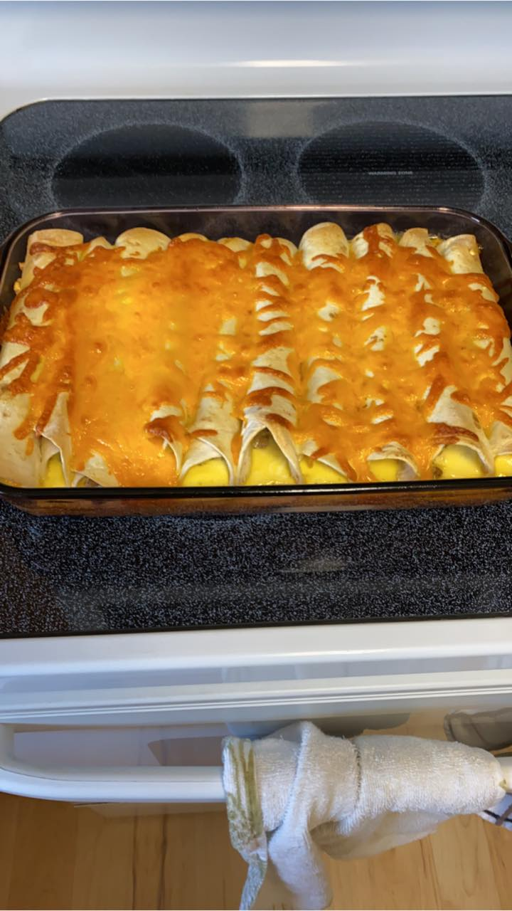

Breakfast: Breakfast Enchiladas
Enchiladas? For breakfast? Why not! This recipe is good any time, but especially for busy mornings. These enchiladas are a make-ahead recipe so you only have to put them in the oven in the morning. This recipe is also very customizable to your liking. The recipe below is what I used, but you can use whichever meats, veggies, and cheeses you prefer!
Ingredients:
- 10 Flour Tortillas (My favorite homemade torialla recipe)
- 2 cups bacon(or whichever meat you prefer), cooked and chopped small
- 2 1/2 cups cheddar cheese, shredded (or whichever cheese you prefer)
- 8 large eggs
- 1 cup half and half
- 1/2 cup green onions, sliced
- 1 teaspoon of salt
- 2 tablespoons of flour
- Salsa and sour cream for serving
Procedure:
- Spray a 9x13 dish with non-stick spray
- Mix togehter your meat, green onions, and 2 cups of cheese; distribute mixture evenly
- Roll tortillas and place seam side down in the pan
- In a large bowl, whisk together eggs, half-and-half, flour, and salt
- Pour liquid over tortialls; cover and refridgerate at least six hours (overnight is ideal)
- When you're ready to bake the enchiladas, preheat oven to 350° F
- Bake enchiladas, covered, covered for 35 minutes
- Remove cover, sprinkle remaining cheese, and bake for an additional 10 minutes or until cheese is melted
- Serve with salsa and sour cream